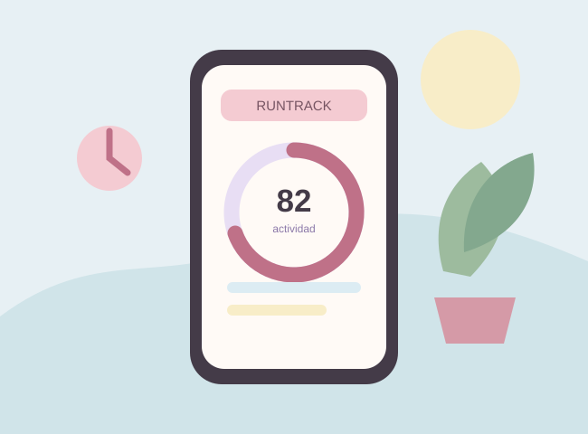
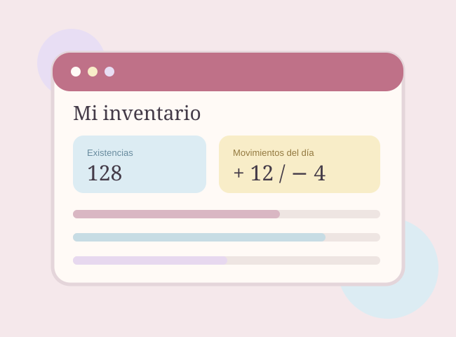
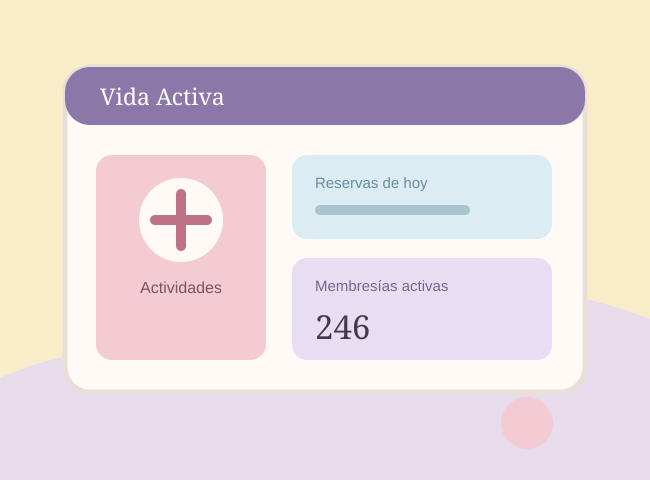

RunTrack
Práctica enfocada en el monitoreo del movimiento mediante sensores del dispositivo, como el acelerómetro y el giroscopio.
Proyecto académicoPráctica, aprendizaje y creación
Una selección de proyectos académicos en los que he puesto en práctica conceptos de programación, diseño de interfaces y manejo de información.

Práctica enfocada en el monitoreo del movimiento mediante sensores del dispositivo, como el acelerómetro y el giroscopio.
Proyecto académico
Aplicación de inventario para registrar entradas y salidas de productos y conservar movimientos mediante una base de datos local.
Proyecto académico
Proyecto de análisis y diseño de un sistema para la gestión de un centro deportivo, con modelos y propuestas de interfaz.
Proyecto académico